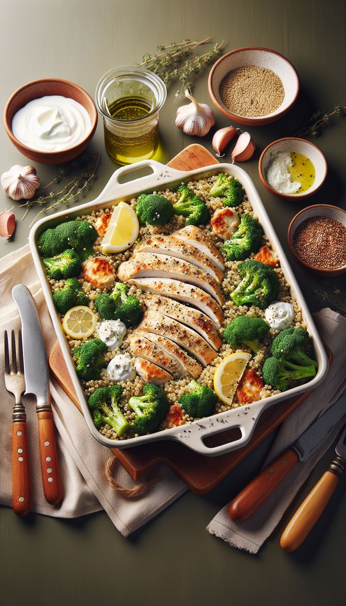

Самый популярный рецепт 2024
Запечённая курица с овощами
Ужин
Ингредиенты (на 2 порции):
- Куриные бёдра или грудка – 2 шт
- Морковь – 1 шт
- Кабачок – 1/2 шт
- Масло (оливковое или сливочное) – 2 ст.л.
- Соль и перец – по вкусу
Приготовление:
- Разогрейте духовку до 200°С
- Нарежьте морковь и кабачок кубиками или соломкой, смешайте с 1 ст.л. масла, солью и перцем, выложите на противень
- Куриное мясо посолите, поперчите, смажьте оставшимся маслом и положите на овощи
- Запекайте 25-30 минут до готовности курицы
- Подавайте горячим